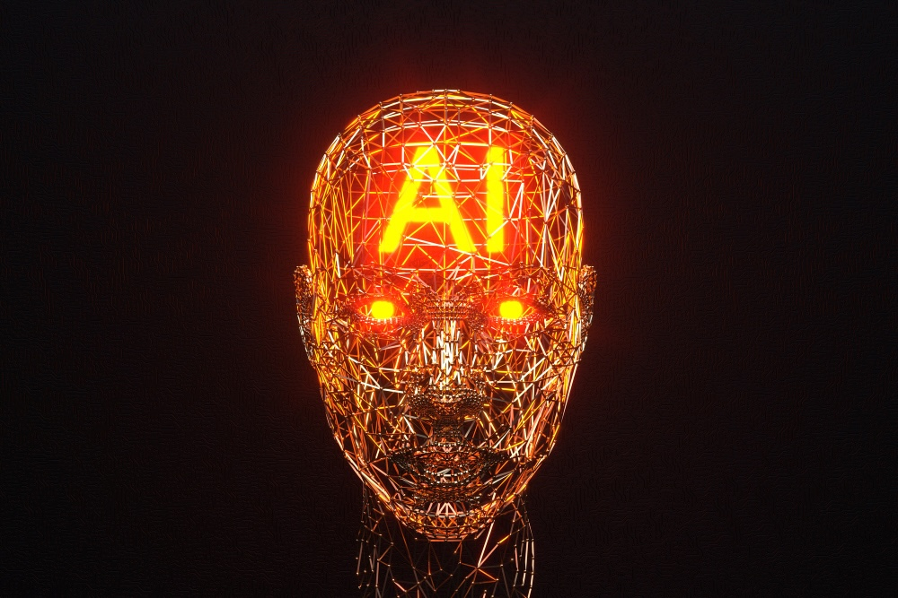

The Dark Side of Artificial
Intelligence

While AI offers many benefits, it also brings serious challenges. If not used responsibly, it can harm privacy, fairness, and even democracy. Understanding these risks is essential to ensure technology serves people — not the other way around.
Bias and Discrimination
AI systems learn from data, but data often reflect human biases.
For example, facial recognition systems have been shown to work less accurately for people with darker skin tones.
If these systems are used in hiring, policing, or credit decisions, they can unfairly disadvantage certain groups.
Privacy and Surveillance
Many AI applications rely on collecting large amounts of personal information.
When data is not properly protected, it can lead to surveillance or misuse.
Smart devices and social media platforms often know more about us than we realize.
Misinformation and Deepfakes
AI can create realistic fake images, videos, or voices — known as deepfakes.
While this technology can be entertaining, it can also spread false information, damage reputations, or influence elections.
It's becoming harder to tell what's real and what's not online.
Job Loss and Economic Impact
Automation powered by AI may replace some jobs, especially repetitive or routine ones.
While new roles will appear, the transition can be difficult for workers who need new skills.
This creates an urgent need for education and fair labor policies.
The Need for Ethical Guidelines
To reduce risks, governments and organizations are developing AI ethics frameworks.
These include principles like:
- Transparency (knowing how AI makes decisions)
- Fairness (avoiding discrimination)
- Accountability (responsibility for AI actions)
- Human oversight (keeping humans in control)
International efforts, such as the EU AI Act and UNESCO's AI Ethics Recommendations, aim to ensure that AI respects human rights.